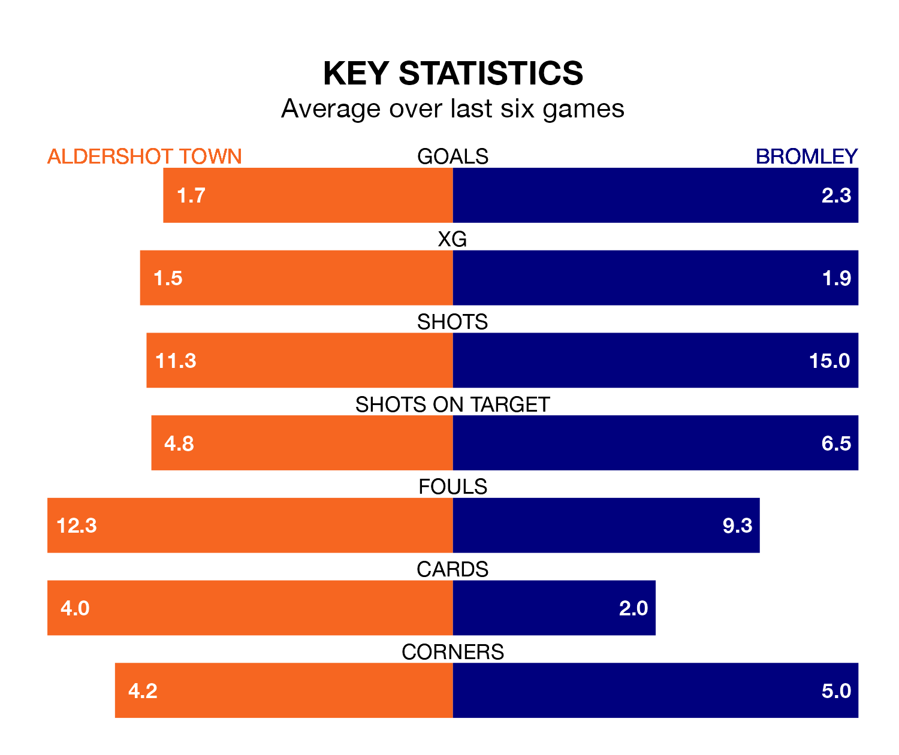

Bromley face Aldershot Town on Tuesday seeking to protect their formidable unbeaten run in National League.
The Ravens are unbeaten in eight, with five wins and three draws, ahead of the 7.45pm kick-off.
They face an Aldershot team who have won three and drawn one over the same number of games.
With 51 goals in 29 games so far this season, Bromley are the league's third-highest scorers with 1.8 goals per game. And they are conceding fewer than average, letting in 31 goals at a rate of 1.1 per game.
Aldershot are also above average scorers, with 1.7 goals per game, compared to a league average of 1.5. They have conceded 1.9 goals per game.
The Ravens are second in the table after 29 games, of which they have won 16 and drawn nine, earning 57 points.
Town are nine places behind the visitors in 11th, with 12 wins and four draws putting them on 40 points.
In the last 10 years, Aldershot and Bromley have played each other on 18 occasions. Aldershot won five of them, Bromley seven, and they drew six times.
On average, the Shots scored 1.7 goals and the Ravens 1.7 in those matches.
Their last meeting was on November 21, when Aldershot won 3-2 away.
Aldershot's last match was on Saturday, a 4-2 loss against Kidderminster Harriers, with Cian Harries and Josh Stokes getting the goals for the Shots.
Bromley drew 2-2 with Boreham Wood last time out, also on Saturday, with Callum Reynolds and Corey Milton Whitely on the scoresheet.
Updated: 09:18 (UTC), 23/01/24